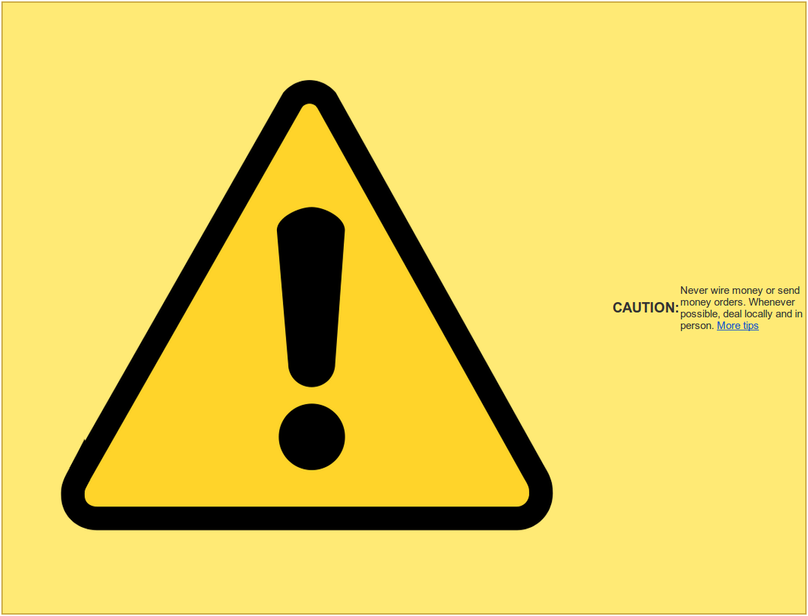

Tonight We're Gonna Code Like It's 1999
Creating Responsive Emails
Who am I?
Once upon a time, I was civil engineer!

But I quickly became bored with the slow pace of projects.
Then I Decided
I wanted to be part of the Tech industry, so I started working as a "Community Specialist" for a "startup".

Read: customer support.
I hated it
So I taught myself to code.
SUCCESS
I landed a job at HotPads as a Web Developer and have been working there ever since.
Here we go
My first assignment was to redesign emails and make them mobile-friendly.
Oh crap
I quickly realized

Fortunately
I'm here to share all of my strategies and mistakes with you!

My Story
Emails are evil.
- Design
- Research
- Assessment
- Planning
- Code
- Things I Learned Before
- Things I Learned During
- Things I Learned After
- Resources
- Blogs
- Templates
- Testing
DESIGN
First Things First
Research!
My first email redesign victim was our Welcome email, so I started researching other companies' Welcome emails.
Least Favorites
Favorites
Most Favoritest
I know, I know, these are not welcome emails.
But they're just so pretty!
Takeaways
- Text light
- Image heavy
- Huge top anchored logo
- Full width = no no
Assessment
What am I working with?
OMG

Wow
Planning
What am I making?
Goals
- Consistency
- Brand Awareness
Responsiveness
- Scalable
- Fluid
- Responsive
Litmus Article
Scalable

Perfect for: Testing the mobile waters Reliable rendering across clients and devices Teams with limited resources
Fluid
Perfect for: Simple layouts Emails with mostly text that can flow Teams with limited resources
Responsive
Perfect for: Large mobile audiences The most control over layout Teams with knowledge of media queries
Pre-Made Templates
There are a LOT of options.

... which I'll talk about a bit later.
I used none.
Sketching
Photoshop
Images
Rule of Thumbs
Minimum touchable area: 44px by 44px


Aesthetic Prince Would Approve of

Just for Reference
CODE
Java Templates
Velocity vs JavaServer Page (JSP)

Things I Learned Before I Started
Tables
Note: Prior to the creation of CSS, HTML <table> elements were often used as a method for page layout. This usage has been discouraged since HTML 4, and the <table> element should not be used for layout purposes.MDN
Tables
They are neither block nor inline.

This means you have to specify them to display as block or Chrome will ignore your max-width style.
Inline Styles
Blah
Max Width
600px based on email clients' preview panes, but also with maximum readability (while avoiding scrolling)
Image Alternatives
For browsers or clients that do not automatically display images! Alt="" or have a background color.
My Template
Code
<%--Content Begin--%>
<%--Content End--%>
Why Template?
- Keeping it DRY
- Blah
Things I Learned While Coding
Device Pixel Ratio
Media Queries
Line Height

i just sent you the test i'm now trying to figure out why the blue border on the bottom is extending 3px beyond the bottom of the footer image
that spacing is weird, it's due to line-height you can either set line-height: 0 on the surrounding td or you can set the image to display: block, so it doesn't interact with line heights
Inline Overwriting Media Query (Padding)
<Img> Within <a>
Super weird and only occurs occasionally.

VS.
Things I Learned After Release
Oops
High Res Images for Retina
The Problem
Outlook 2007, 2010, 2013, and Outlook in IE don't allow HTML or CSS image sizing. Argh.
The Solution
Replace <img> by setting a background-img style on the surrounding <td> and assigning display: none; on the <img>.
@media all and (min-device-pixel-ratio : 1.5),
all and (-webkit-min-device-pixel-ratio: 1.5) {
td[class="cautionBar"] {
background-image: url('http://filenet.hotpads.com/images/email/warning.png');
background-position: center;
background-size: 30px 30px;
background-repeat: no-repeat;
width: 30px; !important;
height: 30px; !important;
}
td[class="cautionBar"] img {
display: none;
}
}

Outlook 2007, 2010, & 2013
Gmail
Ignores <a> color styles in the <head>.
You have to style each and every <a> inline.
Gmail
And "#000", "#000000", or "black" are not allowed for <a> anywhere.
But you shouldn't for accessbility's sake anyway!
Email On Acid TipsRESOURCES
Transition Styles
You can select from different transitions, like:
Cube -
Page -
Concave -
Zoom -
Linear -
Fade -
None -
Default
Themes
Reveal.js comes with a few themes built in:
Default -
Sky -
Beige -
Simple -
Serif -
Night
Moon -
Solarized
* Theme demos are loaded after the presentation which leads to flicker. In production you should load your theme in the <head> using a <link>.
Global State
Set data-state="something" on a slide and "something"
will be added as a class to the document element when the slide is open. This lets you
apply broader style changes, like switching the background.
Custom Events
Additionally custom events can be triggered on a per slide basis by binding to the data-state name.
Reveal.addEventListener( 'customevent', function() {
console.log( '"customevent" has fired' );
} );
Fragment Styles
There's a few styles of fragments, like:
grow
shrink
roll-in
fade-out
highlight-red
highlight-green
highlight-blue
current-visible
highlight-current-blue
Export to PDF
Presentations can be exported to PDF, below is an example that's been uploaded to SlideShare.
Take a Moment
Press b or period on your keyboard to enter the 'paused' mode. This mode is helpful when you want to take distracting slides off the screen during a presentation.